26.3. VoicePack As Practice 语音包实战
As an example, this chapter will introduce the events in Fmod and configs for the game.
以语音包为例，本章将讲解 Fmod 中的事件以及游戏的音频配置。
1. Import Assets 导入资源
Create a subfolder in the crew folder, and drag your voice assets into this folder.
在 crew 文件夹下创建一个子文件夹，然后将音频文件拖入该文件夹。
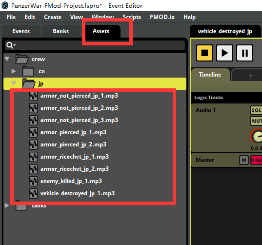
2. Create Events 创建事件
Create a subfolder in crew/ground. Select a set of existing voice events. Press Ctrl + D to duplicate it and drag it into the newly created subfolder. Change the suffix from cn to whatever you want.
在 crew/ground 下创建一个子文件夹，选中一组现有的语音事件，按 Ctrl + D 复制并将其拖入刚刚创建的子文件夹。将事件后缀从 cn 更改为你想要的标识。例如，如图中所示，将 cn 改为 jp。
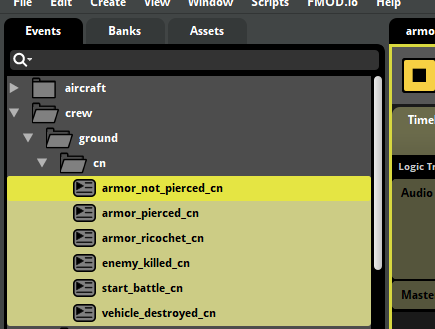
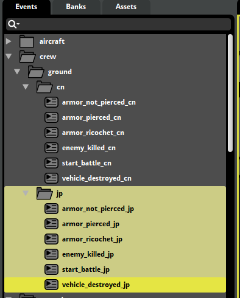
Select your event. Delete the original sounds from the playlist and add your sounds into the playlist one by one.
选中该事件，将 Playlist 中的原有音频删除，然后逐一将你的音频拖入其中。
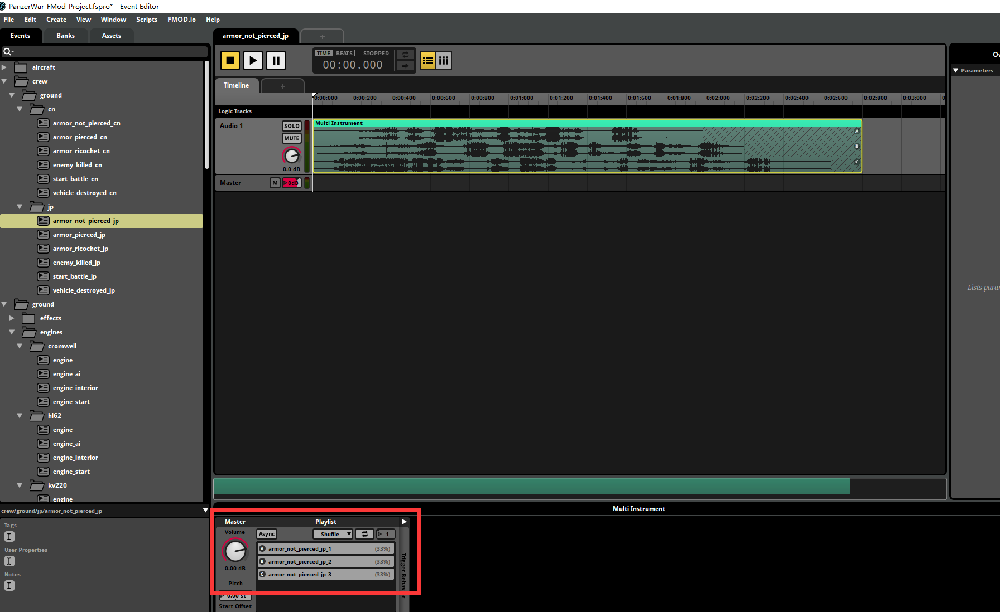
3. Check Mixer 检查 Mixer
Press Ctrl + 2 to enter the Mixer window. Be sure the newly created events are under the dialogs group.
按 Ctrl + 2 进入 Mixer 窗口，确保新创建的事件位于 dialogs 组中。
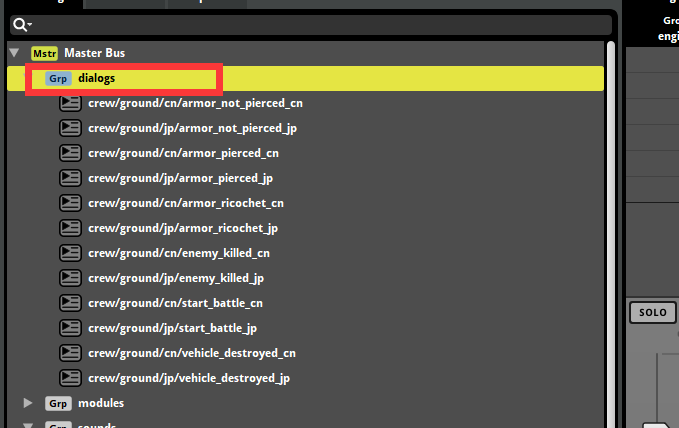
4. Create Sound Bank 创建 SoundBank
Create a new bank under Banks.
在 Banks 中创建一个新的 Bank。
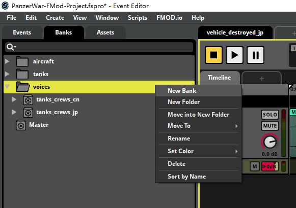
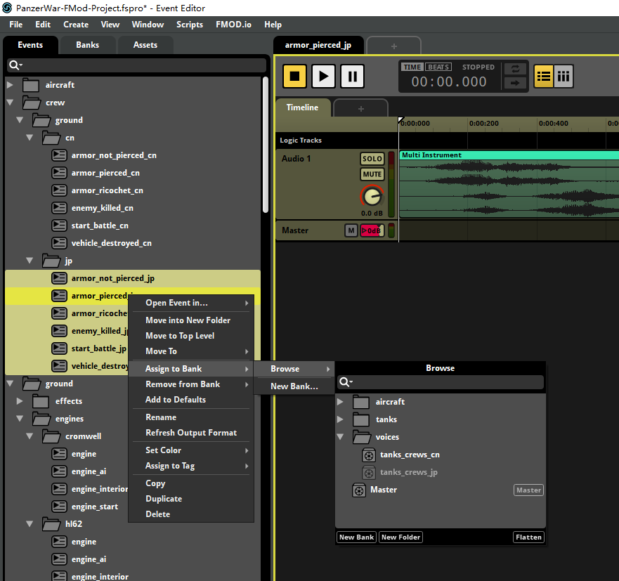
Then build all platforms. It will generate bank files at PanzerWar-Mods\PanzerWar-FMod-UGC-Project\Build.
然后，打包所有平台。Bank 文件将在 PanzerWar-Mods\PanzerWar-FMod-UGC-Project\Build 目录下生成。
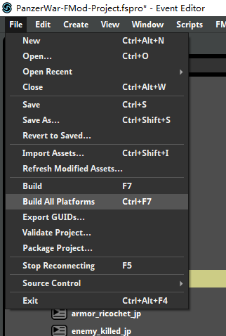
Then the work in Fmod Studio is finished. Let's go back to the Unity project.
至此，Fmod Studio 中的工作已完成。让我们回到 Unity 工程。
5. Create Config 创建配置
Use the following tool to create configs faster.
使用以下工具快速创建配置。
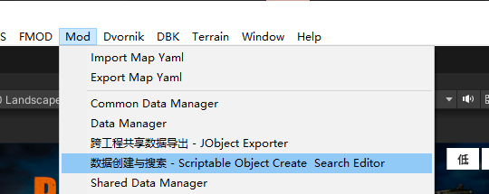
5.1 Create Crew Voice Config 创建成员语音配置
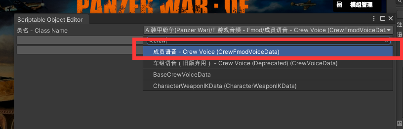
Select the events that you created in Fmod in the previous step.
将上一步在 Fmod 中创建的事件名称填入对应类型。
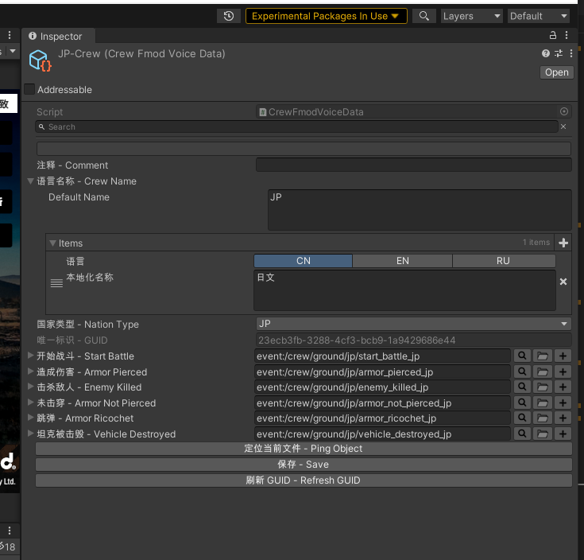
5.2 Create Bank BuildPipline 创建 Bank 打包配置
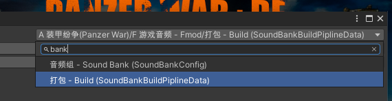
Create the SoundBankBuildPiplineData Build file.
创建音效打包文件（SoundBankBuildPiplineData）。
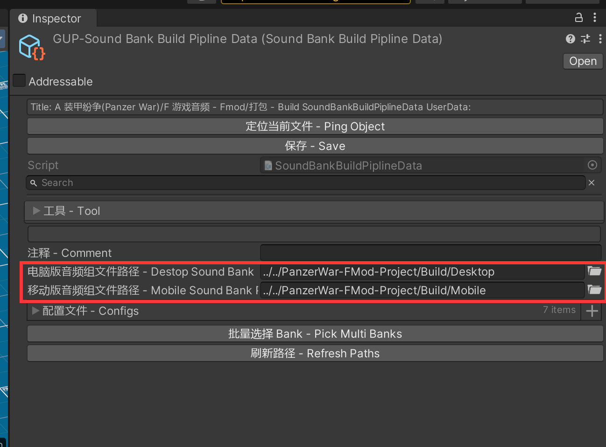
Pick the folder that banks are built.
选择 Bank 文件所在的文件夹。
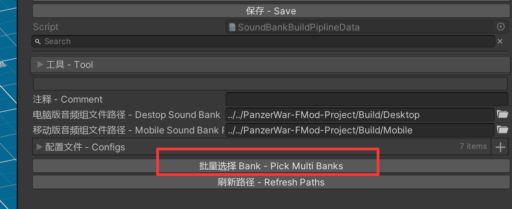
Pick .bank extension files.
选择 .bank 扩展名的文件。
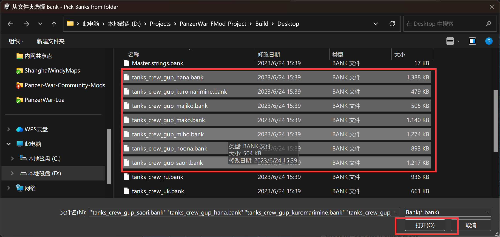
In the configs array, sound bank configs are generated automatically.
在配置数组中，SoundBank Config 会自动生成。
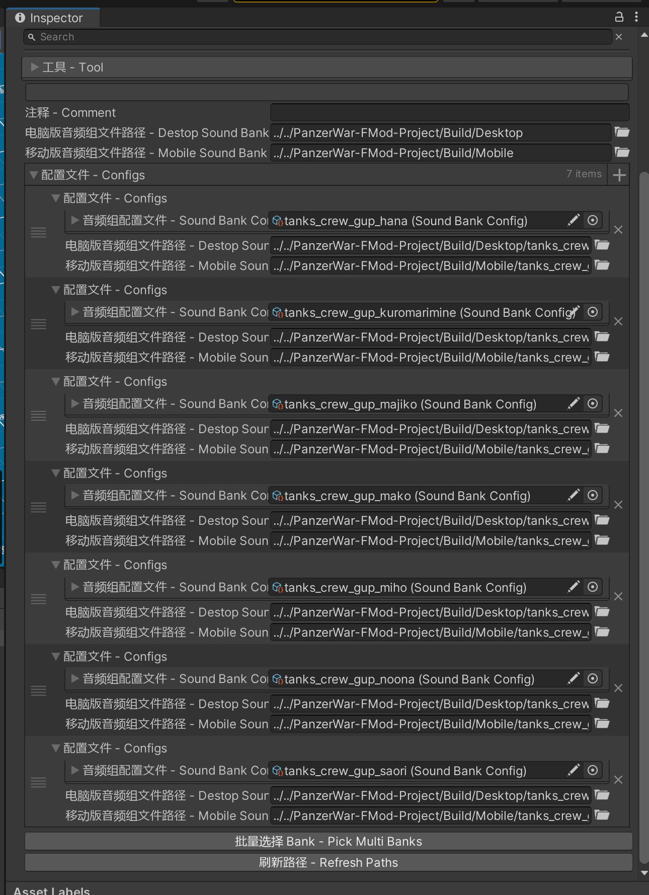
6. Build Config 打包配置
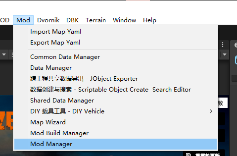
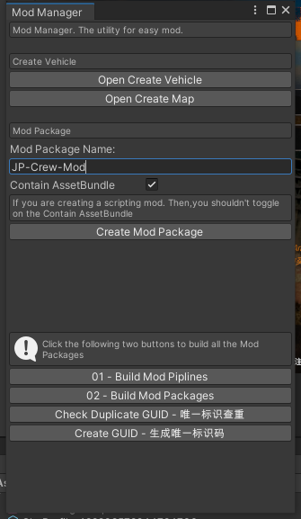
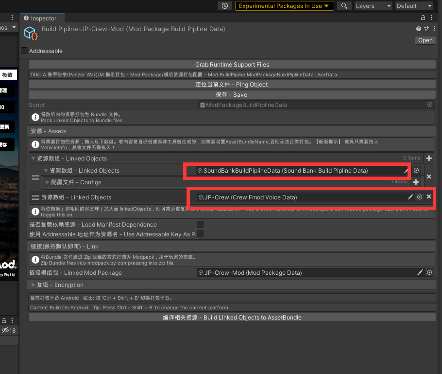
Then, you can build like other Mods.
然后，即可像其他模组一样进行打包。